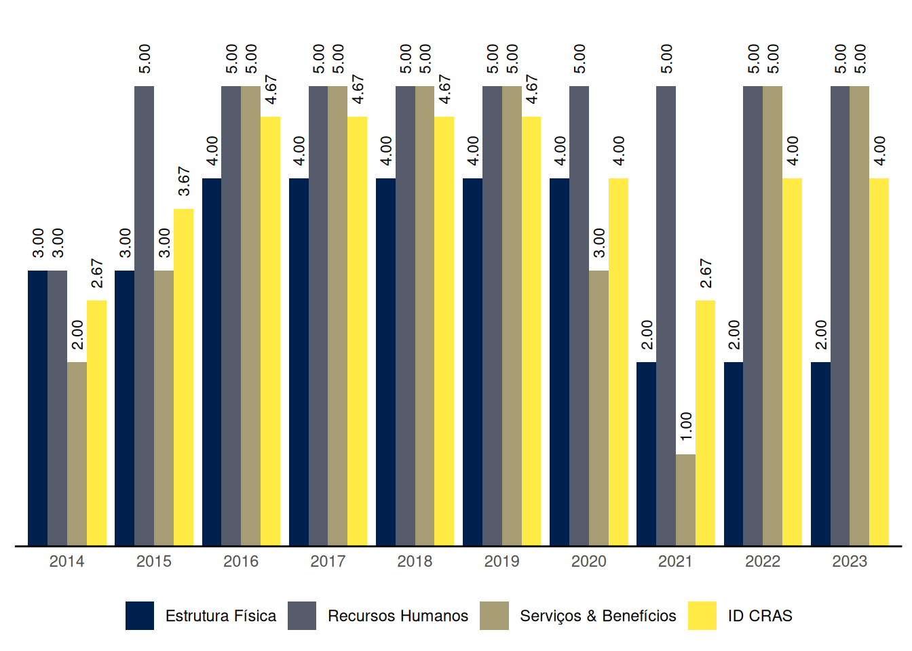
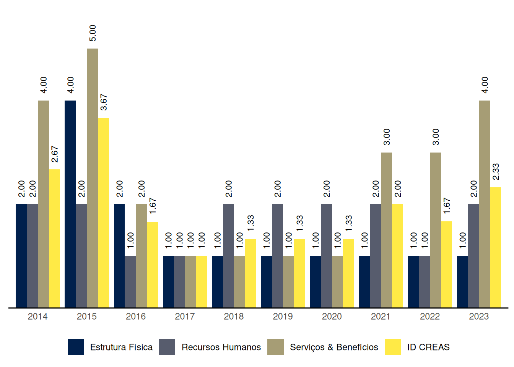

São Pedro do Ivaí
Relatório de Indicadores Censo SUAS 2023 do município de São Pedro do Ivaí, Paraná
1 ID CRAS: Índice de Desenvolvimento do CRAS
O ID CRAS é um indicador sintético que retrata o grau de desenvolvimento do CRAS. Ele é composto por três dimensões: Estrutura Física, Recursos Humanos e Serviços & Benefícios. Em cada dimensão é atribuída uma nota de 1 a 5 de acordo com critérios indicativos do nível de desenvolvimento do CRAS, sendo 5 o nível máximo de desenvolvimento. O ID CRAS é a média das notas alcançadas nas três dimensões.
O Gráfico 1 mostra a evolução das médias do ID CRAS ao longo dos anos no município de São Pedro do Ivaí, Paraná.
| Capacidade de até: | Quantidade |
|---|---|
| 2.500 famílias referenciadas | 1 |
| 3.500 famílias referenciadas | 0 |
| 5.000 famílias referenciadas | 0 |
As seções a seguir apresentam os resultados do município de São Pedro do Ivaí em cada uma das dimensões do ID CRAS, bem como os requisitos para se alcançar os níveis superiores.
1.1 ID CRAS: Dimensão Estrutura Física
1.1.1 CRAS com capacidade de referenciamento para até 2.500 ou 3.500 famílias
Na dimensão Estrutura Física, o nível de ID do CRAS com capacidade de referenciamento para até 2.500 ou 3.500 famílias no município de São Pedro do Ivaí é 2.
O CRAS de nível 2, com capacidade de referenciamento para até 2.500 ou 3.500 famílias, na dimensão Estrutura Física:
- Possui no mínimo 2 salas de atendimento; e
- Possui pelo menos 1 banheiro.
Para alcançar o nível 3 na dimensão Estrutura Física, o CRAS com capacidade de referenciamento para até 2.500 ou 3.500 famílias precisa, além dos requisitos do nível 2:
- Possuir recepção; e
- Possuir acessibilidade, ao menos parcial.
1.1.2 CRAS com capacidade de referenciamento para até 5.000 famílias
São Pedro do Ivaí não tem CRAS com capacidade de referenciamento para até 5.000 famílias.
1.2 ID CRAS: Dimensão Recursos Humanos
1.2.1 CRAS com capacidade de referenciamento para até 2.500 famílias
Na dimensão Recursos Humanos, o nível de ID do CRAS com capacidade de referenciamento para até 2.500 famílias no município de São Pedro do Ivaí é 5.
O CRAS de nível 5, com capacidade de referenciamento para até 2.500 famílias, na dimensão Recursos Humanos:
- Possui no mínimo 5 (9, se EV) profissionais, sendo pelo menos 3 (5, se EV) com nível superior; e
- Possui no mínimo 1 Assistente Social (2, se EV) e 1 Psicólogo; e
- Possui no mínimo 1 profissional de nível superior com vínculo estatutário ou empregado público celetista; e
- Possui coordenador com nível superior.
1.2.2 CRAS com capacidade de referenciamento para até 3.500 famílias
São Pedro do Ivaí não tem CRAS com capacidade de referenciamento para até 3.500 famílias.
1.2.3 CRAS com capacidade de referenciamento para até 5.000 famílias
São Pedro do Ivaí não tem CRAS com capacidade de referenciamento para até 5.000 famílias.
1.3 ID CRAS: Dimensão Serviços & Benefícios
Na dimensão Serviços & Benefícios, o nível de ID do CRAS no município de São Pedro do Ivaí é 5.
O CRAS de nível 5 na dimensão Serviços & Benefícios em município de porte Pequeno I:
- Tem quantidade média de famílias em acompanhamento no mês, dividida pela equipe técnica (Assistentes Sociais e Psicólogos) não inferior a 20 nem superior a 100; e
- Executa o PAIF realizando no mínimo as seguintes atividades: acompanhamento de famílias; grupo/oficina com famílias; visitas domiciliares; palestras, campanhas ou eventos comunitários; orientação/acompanhamento para inserção no BPC e acompanhamento dos encaminhamentos realizados; e
- Possui profissionais de Serviço Social e/ou de Psicologia; e
- Possui oferta de Serviço de Convivência, para no mínimo três ciclos de vida (oferta direta do CRAS ou por meio de unidades a ele referenciadas); e
- Realiza no próprio CRAS o cadastramento/atualização cadastral do CadÚnico, sem utilizar para isso os profissionais de nível superior do PAIF; e
- Possui forte articulação com os Serviços de Educação e Saúde no território; e
- Funciona no mínimo 5 dias por semana e 40 horas semanais.
2 ID CREAS: Índice de Desenvolvimento do CREAS
O ID CREAS é um indicador sintético que retrata o grau de desenvolvimento do CREAS. Ele é composto por três dimensões: Estrutura Física, Recursos Humanos e Serviços & Benefícios. Em cada dimensão é atribuída uma nota de 1 a 5 de acordo com critérios indicativos do nível de desenvolvimento do CREAS, sendo 5 o nível máximo de desenvolvimento. O ID CREAS é a média das notas alcançadas nas três dimensões.
O Gráfico 2 mostra a evolução das médias do ID CREAS ao longo dos anos no município de São Pedro do Ivaí, Paraná.

As seções a seguir apresentam os resultados do município de São Pedro do Ivaí em cada uma das dimensões do ID CREAS, bem como os requisitos para se alcançar os níveis superiores.
2.1 ID CREAS: Dimensão Estrutura Física
Na dimensão Estrutura Física, o nível de ID do CREAS no município de São Pedro do Ivaí é 1.
O CREAS de nível 1 na dimensão Estrutura Física em município de porte Pequeno I:
- Possui menos de 3 salas; e/ou
- Não possui banheiro; e/ou
- Faz compartilhamento dos espaços de atendimento.
Para alcançar o nível 2 na dimensão Estrutura Física, o CREAS em município de porte Pequeno I precisa:
- Possuir no mínimo 3 salas (atendimento e/ou administrativa); e
- Possuir no mínimo 1 banheiro.
2.2 ID CREAS: Dimensão Recursos Humanos
Na dimensão Recursos Humanos, o nível de ID do CREAS no município de São Pedro do Ivaí é 2.
O CREAS de nível 2 na dimensão Recursos Humanos em município de porte Pequeno I:
- Tem quantidade total de trabalhadores (nível superior e médio) maior ou igual a 3 (6, se CREAS Regional); e
- Possui no mínimo 1 Assistente Social e 1 Psicólogo (além disso, se for CREAS Regional, o total de Assistentes Sociais mais Psicólogos deve ser maior ou igual a 4).
Para alcançar o nível 3 na dimensão Recursos Humanos, o CREAS em município de porte Pequeno I precisa, além dos requisitos do nível 2:
- Possuir Coordenador com nível superior; e
- Ter quantidade total de trabalhadores (nível superior e médio) maior ou igual a 5 (10, se CREAS Regional), sendo no mínimo 3 (5, se CREAS Regional) deles de nível superior.
2.3 ID CREAS: Dimensão Serviços & Benefícios
Na dimensão Serviços & Benefícios, o nível de ID do CREAS no município de São Pedro do Ivaí é 4.
O CREAS de nível 4 na dimensão Serviços & Benefícios em município de porte Pequeno I:
- Oferta o PAEFI assegurando a realização, pelo menos, das seguintes atividades: Entrevistas de acolhida para avaliação inicial dos casos, Atendimento psicossocial em grupo, Atendimento psicossocial individual/familiar, Construção de Plano Individual e/ou Familiar de atendimento, Visitas domiciliares e Elaboração de relatórios técnicos sobre casos em acompanhamento; e
- Tem quantidade média de casos em acompanhamento no mês, dividida pela equipe técnica (AS + PSI) menor ou igual a 50 casos; e
- Oferta atendimento para variadas situações de violência ou violação de direitos e para os diferentes ciclos de vida; e
- Possui forte articulação com o CRAS e com o Conselho Tutelar; e
- Oferta o Serviço de MSE assegurando a elaboração do Plano Individual de Atendimento (PIA) do adolescente (APLICA-SE SOMENTE SE O MUNICÍPIO RECEBER COFINANCIAMENTO ou se for CREAS Regional); e
- Oferta o Serviço de Abordagem ou tem o Serviço referenciado (APLICA-SE SOMENTE SE O MUNICÍPIO RECEBER COFINANCIAMENTO ou se for CREAS Regional).
Para alcançar o nível 5 na dimensão Serviços & Benefícios, o CREAS em município de porte Pequeno I precisa, além dos requisitos do nível 4:
- Ofertar o PAEFI assegurando a realização de Ações de mobilização e sensibilização para o enfrentamento das situações de violação de direitos (além da realização das atividades exigidas no nível 4); e
- Ter quantidade média de casos em acompanhamento no mês, dividida pela equipe técnica (AS + PSI) menor ou igual a 30 casos; e
- Possuir Assistente Social e Psicólogo; e
- Funcionar no mínimo 5 dias por semana e 40 horas semanais; e
- Ofertar o Serviço de MSE assegurando a realização, pelo menos, das seguintes atividades, além das atividades exigidas no nível 4: Ofertar LA e PSC; Acompanhamento de LA e PSC, com frequência de atendimento semanal ou quinzenal e Atendimento do adolescente em grupos (APLICA-SE SOMENTE SE O MUNICÍPIO RECEBER COFINANCIAMENTO ou se for CREAS Regional).